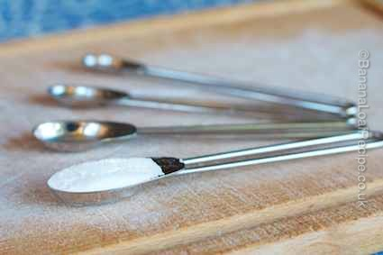

Banana Loaf Recipe Ingredients

Our banana loaf recipe is simple and easy. Nevertheless, as you read the recipe, prepare your shopping list or even as you start making the cake, you might have questions about the ingredients we use or the quantities we specify.
In this article we try to pre-empt your thoughts and queries, give a bit more detail about our shopping habits and ethics. We also try to help to answer questions you may have on substituting alternative ingredients.
Bananas

This banana loaf recipe is perfect for using up old bananas. Really, the riper the better. There seems to be no doubt that using a riper banana gives a better texture to the banana loaf cake. Furthermore, using perfectly yellow bananas with no brown markings at all reduces the banana flavour of the loaf cake. And just totally forget about green bananas. Make something else.
You can also use bananas that have been frozen. See our separate article about freezing bananas here.
Our recipe calls for approximately 1lb of bananas. In general, we find the recipe relatively forgiving on quantities though - 3 or 4 bananas will do the trick. Though we can't say it too often - the riper, the better! You may just need to adjust the cooking time a bit to compensate if you've got a particularly wet mixture. See our article Is my Banana Loaf cooked? for more help.
Eggs
Eggs are used to add richness to the banana loaf cake and they also help it to rise. We use large eggs in ours (size 1 or 2). Fresh eggs are best - less fresh eggs will produce less of a rise in your cake.
Oh, and buy free-range please. We don’t sermonise about much here at BananaLoafRecipe.co.uk but we could do on the subject of free-range eggs. Just stop and think about it for one second - the hell that battery-farming represents - and then put free-range eggs in your shopping trolley. Please.
Flour
We use wholemeal flour in the banana loaf recipe because it gives a superior flavour and we like the texture it produces. It also makes us feel healthy! Don’t use strong flour as this is deliberately a more glutenous flour that is for bread making not cakes. If you don't have wholemeal plain flour, you can use white but the taste will be slightly less wholesome.
Baking powder

This is not bicarbonate of soda! (or baking soda if you’re American). Baking powder is a leavening agent that is a pre-mix of bicarbonate of soda (baking soda) and cream of tartar.
If your baking powder has been lurking in the back of the cupboard for years, throw it out and buy new. The effectiveness of baking powder deteriorates with age and will affect the rise of your cake.
Sugar
Our banana loaf recipe contains dark brown sugar. We prefer brown sugar because of the richer darker flavour it gives to the cake. You could substitute light brown sugar if you wanted.
Butter/Margarine
Since the butter needs to be rubbed into the flour, you need a hard fat for this. A soft margarine will not do the job. So you can use butter or a hard margarine, but butter will give a superior flavour. Your task of rubbing fat into flour will be made easier if the butter comes straight out of the fridge. Please see our separate article about the rubbing-in method.